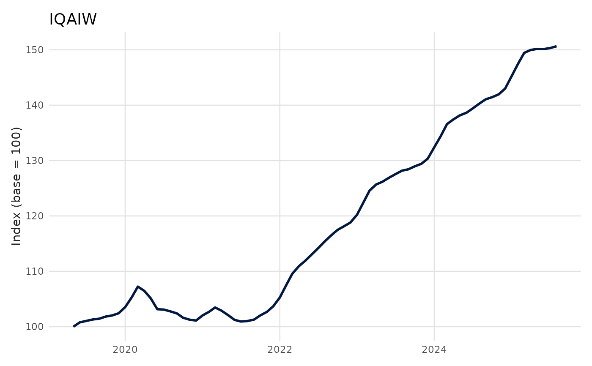
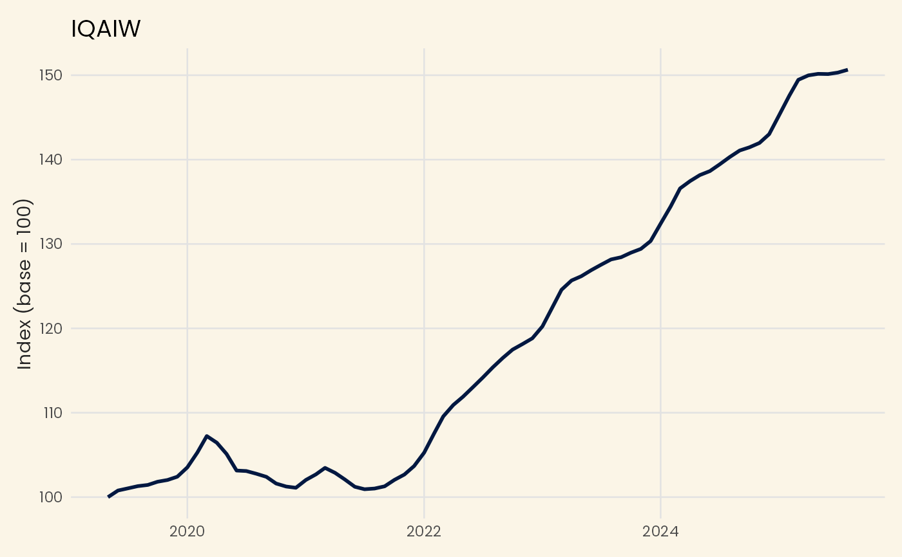

A ggplot2 base theme for Benvi styled plots.
The Poppins font is bundled with the package and registered automatically on
load when systemfonts is installed. When both systemfonts and ragg are
available, the theme uses Poppins by default. Otherwise it falls back to the
system's default sans-serif font.
Registered fonts only work with systemfonts-aware devices (e.g.
ragg::agg_png). Base R devices (PDF, PostScript) cannot render them. If you
see font warnings when saving to PDF, pass base_family = "sans" or set
options(theme_benvi.font_family = "sans"). See font_status() to check
your setup.
Usage
theme_benvi(
base_family = getOption("theme_benvi.font_family", default_font_family()),
base_size = 10,
background = FALSE
)Arguments
- base_family
Argument passed to
ggplot2::theme_minimal(). Defaults to"Poppins"when the bundled font is registered andraggis available,"sans"otherwise. Override globally withoptions(theme_benvi.font_family = ...).- base_size
Argument passed to
ggplot2::theme_minimal(). Defaults to 10.- background
Logical. Adds an offwhite (creme) background to the plot.
Examples
library(ggplot2)
series <- subset(iqaiw, name_muni == "S\u00e3o Paulo" & rooms == "Total")
# Base theme (using "sans" for portability)
ggplot(series, aes(date, index)) +
geom_line(color = benvi_palette("benvi_blue")[1], lwd = 1) +
labs(x = NULL, y = "Index (base = 100)", title = "IQAIW") +
theme_benvi(base_family = "sans")

# Optional offwhite (creme) background
ggplot(series, aes(date, index)) +
geom_line(color = benvi_palette("benvi_blue")[1], lwd = 1) +
labs(x = NULL, y = "Index (base = 100)", title = "IQAIW") +
theme_benvi(base_family = "sans", background = TRUE)

if (FALSE) { # \dontrun{
# Use Poppins with a ragg device (requires systemfonts and ragg)
ggplot(series, aes(date, index)) +
geom_line(color = benvi_palette("benvi_blue")[1], lwd = 1) +
labs(x = NULL, y = "Index (base = 100)", title = "IQAIW") +
theme_benvi(base_family = "Poppins")
} # }